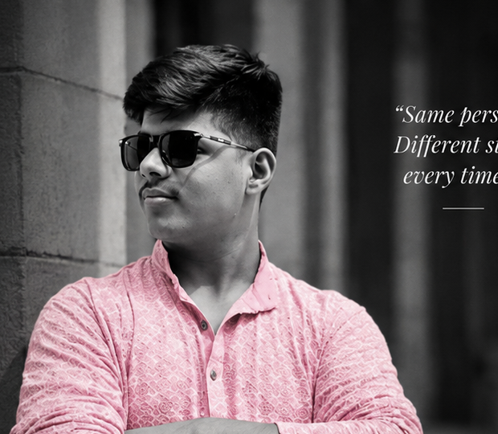
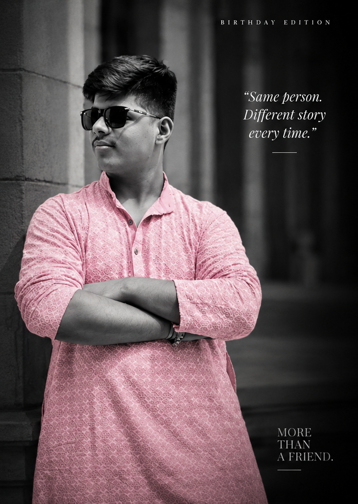
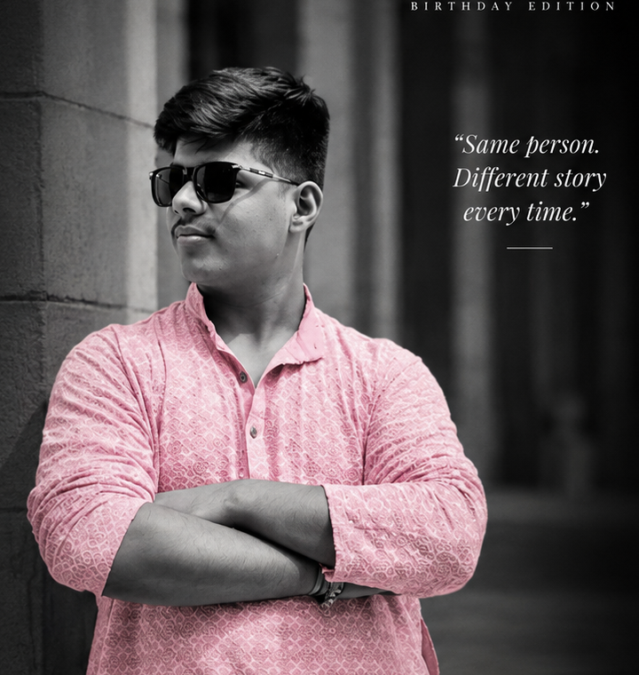
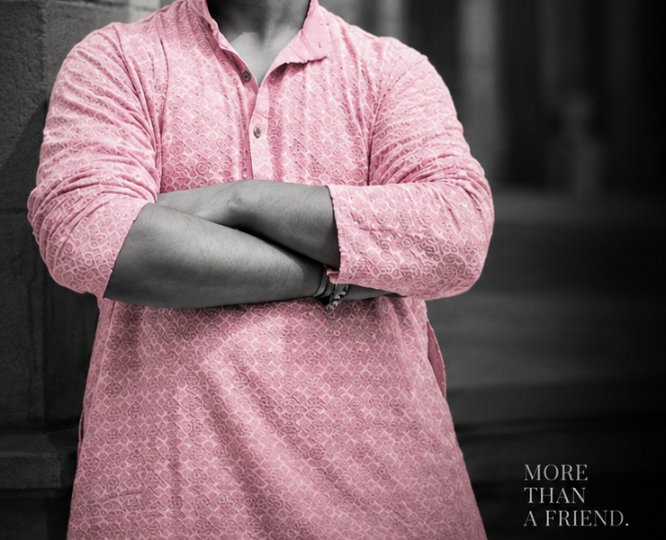
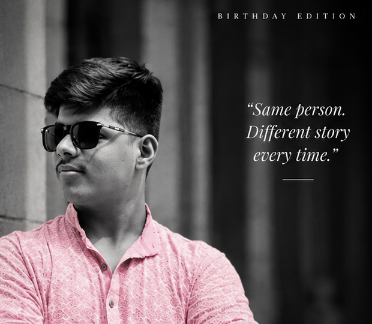
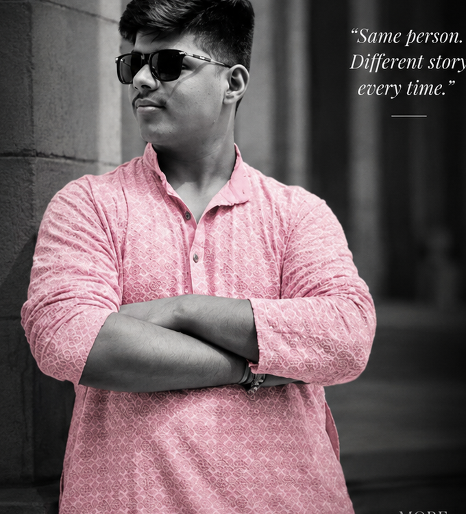

01 / ARCHIVE
REF. 2023-FST
THE BEGINNING
The first conversations that quietly set everything into motion.
A closer look at the person behind the stories, the chaos and the moments that became memories.

There are people who simply exist, drifting along the predictable frequencies of everyday life, and then there are people who make every place a little more interesting just by occupying a chair. Our subject falls undeniably into the second category.
Known for his calm confidence, random ideas and unpredictable humour, he has managed to leave an unmistakable mark on everyone around him. Whether it’s in the quiet corners of late-night study halls, at university corridors, or on unending bus rides home, his presence never goes unnoticed.
From frantic coding sessions right before deadlines to spontaneous philosophical discussions, from intense debates about life to absolutely senseless banter, he somehow turns ordinary situations into moments worth remembering.
He operates on a rare, peculiar frequency: a calculated mix of discipline and chaos, sharp logic and creative whims, serious ambitions and wildly questionable decisions. That delicate contradiction is exactly what makes him one of a kind.
In the dynamic of the friend circle, he isn't merely an observer; he is the catalyst. When energy runs flat, a single deadpan remark from behind his dark sunglasses resets the entire room into uncontrollable laughter. When situations turn complex, his perspective cuts cleanly through the noise.
University years would feel entirely unwritten without his signature timing. The inside jokes that survived semesters, the unplanned roadside tea stops, and the sudden plans that turned into legendary stories all trace back to his orbit.
As he turns another year older, we celebrate not just the date on the calendar, but the unmistakable gravity he brings to the people fortunate enough to call him a friend. A creator, a thinker, a vibe, and a cornerstone of the narrative that is Side Effects.
Here’s to the unsolved problems, the midnight conversations, the shared exhaustion after long days, and the laughter that made everything bearable.
Here’s to more ideas, more chaos, more growth, and many more stories yet to be written.
Some people bring good vibes.
You bring the whole different dimension.

In a culture obsessed with curated appearances and transient digital applause, authentic presence is exceedingly rare. It isn't found in rehearsed words or posed photos. It is discovered in the quiet reliability of someone who shows up when it matters most.
We remember the stressful exam nights turned into impromptu comedy clubs, the debates that solved none of the world’s problems but made us think deeper, and the reassurance of having someone in the room whose confidence never wavers even when everything is going sideways.
That is what sits beyond the borders of this frame: years of shared ground, unspoken respect, and a bond forged across countless everyday adventures.




To another year of stories worth remembering.